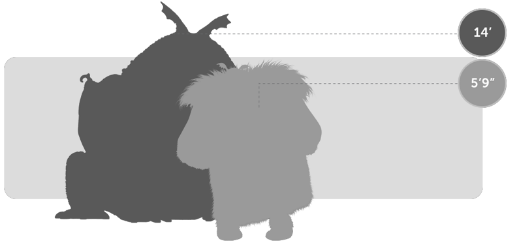
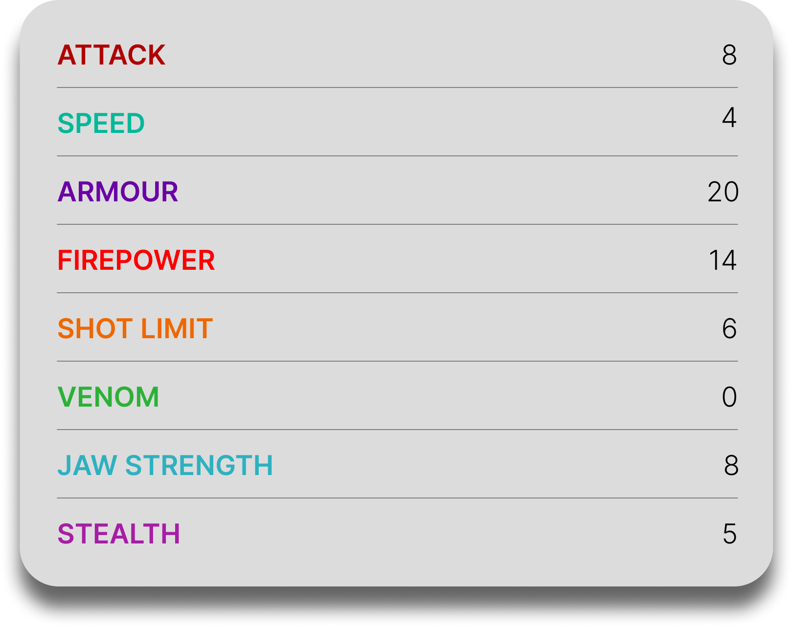

Gronkle
General Overview
The Gronckle is a medium-sized dragon belonging to the Boulder Class. Known for its bulky appearance and surprising strength, it is often underestimated due to its slow and clumsy behavior. Despite this, the Gronckle is one of the toughest dragons in existence, capable of producing powerful lava-based attacks and withstanding significant damage thanks to its heavily armored body.


Physical Appearance
- Body & Color: It has a round, heavy body covered in thick, rock-like armor, usually in earthy tones such as brown, gray, or orange.
- Head & Face: Its face is wide and blunt with large teeth, giving it a rugged and somewhat comical appearance.
- Appendages: It has short but strong legs and small wings that beat rapidly to keep it airborne despite its weight.
- Wings & Tail: Its wings are compact and fast-moving, while its short tail helps maintain balance during flight and landing.
Abilities and Combat
- Lava Blast: It swallows rocks, melts them internally, and fires them as molten lava projectiles.
- Heavy Armor: Its thick, rock-like skin provides strong natural protection against attacks.
- Endurance: It can withstand heavy impacts and continue fighting thanks to its durability.
- Hover Flight: Its wings beat extremely fast, allowing it to hover and move like a buzzing creature despite its size.
- Strength: Its weight and power allow it to carry loads and crush obstacles with ease.
- Gronckle Iron: It can produce a unique molten material that hardens into a strong and lightweight metal.
Behavior and Personality
- Intelligence: It is simple but capable of forming strong bonds with its rider.
- Temperament: Gronckles are often lazy, stubborn, and easily distracted, but can also be surprisingly affectionate.
- Behavior: They prefer resting and eating over fighting, but will defend themselves when necessary.
- Social Traits: They can display caring, almost motherly behavior toward those they trust.
- Diet: Their diet consists mainly of rocks, which they melt internally to produce lava.